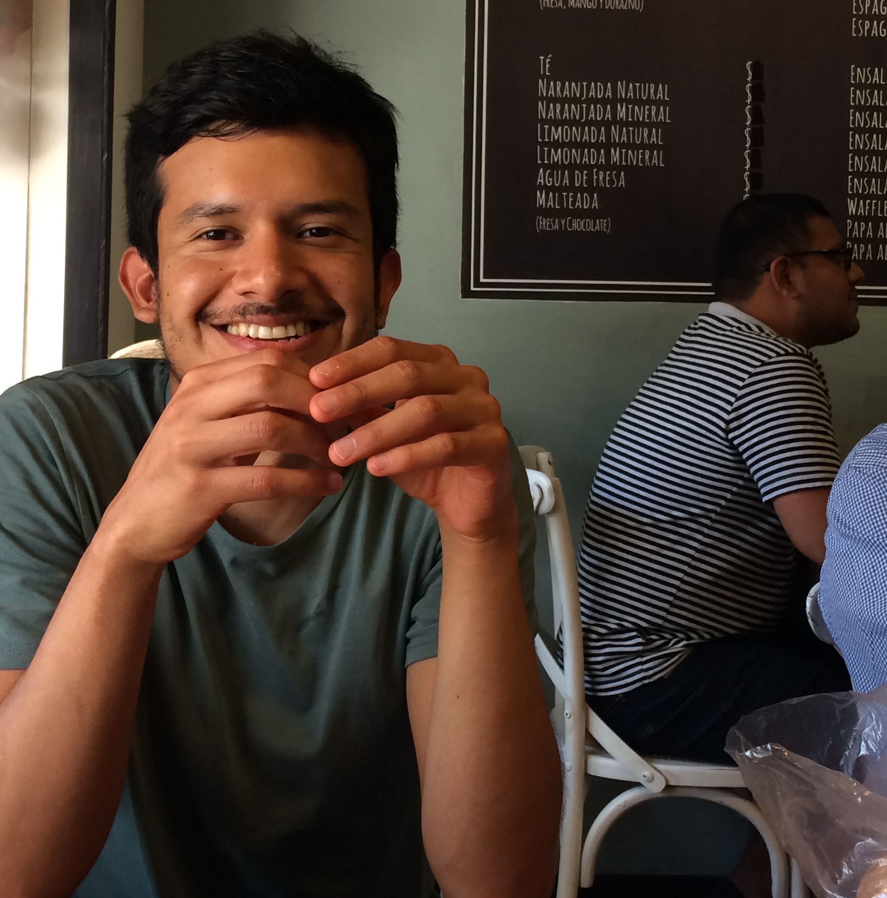
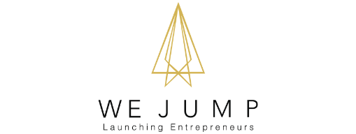
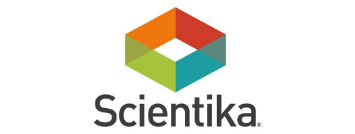
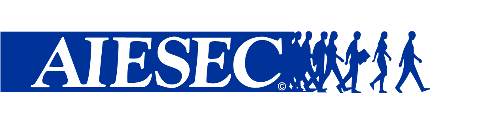
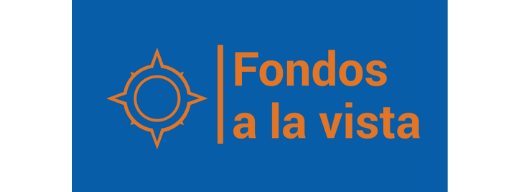

Alejandro Comi Pretelín
Businessman, Entrepreneur, Web Developer

Skills and Competencies
Entrepreneur and Businessman. Skills oriented to business and organizational leadership.
Languages:
- Spanish
- French
- English
Business Management and International Affairs (ITAM)
2009-2016
Entrepreneurial Vision. I decided to study at the Instituto Tecnológico Autónomo de México (ITAM) a double bachelor on Business Management and International Affairs aiming to create organizations with a great social impact that could generate intersectorial alliances with NGOs, private companies and public organizations in order to solve different social issues.

El Café de los Sentidos, S. de R.L. de C.V.
2013-Present
Co-founder & CEO. El Café de los Sentidos is a social Mexican company recognized by the Ministry of Economy as a 'High Impact Company'.
1st Place - Canvas Business Model Contest. Organized by the Ministry of Economy in the 1st Entrepreneurial Week in Mexico.
Feher Consulting Incubation Process. I received a $95,000.00 support by the Ministry of Economy to incubate El Café de los Sentidos in Feher Consulting (Some of their clients are Cielito Querido Café, Sushi Itto y Fisher's amongst others).
Legal Incorporation of a Limited Liability Company. I developed the corporate purpose and articles of association of El Café de los Sentidos to have a separate legal personality.
Federal Public Funds Management. I managed the whole process to receive $200,000.00 from the Ministry of Economy to stablish the first coffee shop of El Café de los Sentidos in Mexico City.
Legal Incorporation of a Non-Profit Organization. In 2015, I co-founded with Luz María Osuna (President from the Latin American Coffee Summit - the most important spanish-speaking coffee summit in the world) Grupo Coexme, A.C. a non-profit organization that has supported with +7 million Mexican pesos more than 300 coffee farmers in Chiapas to offer the highest quality coffee.
Premio Sabor. In 2016, one of our coffees was recognized as 1 of the best 6 Mexican roasted coffees in the Premio Sabor.
Consultancy. In 2017, I offered advice to Carlos García Campillo - Mexican coffee farmer - to develop a coffee process unknown for him (Red Honey coffee process). This coffee, won a Gold Medal in an international contest organized by the Agence pour la Valorisation des Produits Agricoles in France.
Other activities in the company:
- Canvas Business Model + Business Plan development (including the financial model)
- Crowdfunding campaign development. In 2015, we were supported by 94 people from México, New Zealand, United Kingdom, India, Finland, Germany, Peru, Sweden, Lebanon, France, Netherlands, Italy and the United States to finance a percentage of the total investment for the first coffee shop from El Café de los Sentidos.
- Advertising campaigns (A / B Testing) with Facebook Ads.
- Creation and development of food and beverage menu.
- Development of new business lines.
- I completed the selection process for the 'Mi Asesor' Program developed by the World Bank, Stanford University and the Ministry of Economy in Mexico and we were chosen to be part of the program.
- Generation of key alliances with San Remo Coffee Machines (one of the most important espresso machine companies in the world) and with Bunn-o-Matic Corporation (one of the most important brands in the coffee industry).
- Consultant for Quantum Coffee. I developed the Business Model of the project and the application to a business incubation program supported by Google at the Universidad Nacional Autónoma de México (UNAM). Quantum Coffee was selected to be part of the program.
- I became a barista, roaster, and coffee taster with the goal of identifying and harnessing the best coffee beans.
- I have been involved in practically all the different sectors of the coffee industry in order to fully understand how the different coffee markets work in Mexico and the world.
- I developed from scratch a workshop 'How to Start your Coffee Shop' that I have given to more than 100 people, also a 'Barista and Latte Art Workshop', a 'Tasting Workshop' and a 'Coffee Chemistry Workshop (Brew Bar)'.
- Development of coffee events (Guided visits to coffee producing areas, tasting of different specialty coffees).
Currently, with the support of my collaborative team, I decided to take a break to continue my professional growth in other areas of opportunity.{kind=link}
{kind=link}
{kind=link}
{kind=link}
{kind=link}
{kind=link}
{kind=link}
WeJump: Launching Entrepreneurs
December 2015 - November 2016
Consultant & Business Development | Crowdequity Platform fostered by Influencers.
Comprehensive development of the business from the concept (design thinking, Canvas Business Model) and Business Plan development to the legal incorporation of a S.A.P.I de C.V. This project was made for Enrique Díaz-Infante.
Seed Capital Raising. $100,000.00 aimed to fund the MVP (Minimum Viable Product) of WeJump with Ruby on Rails.
Team Management (4 people) to stablish the technological, commercial and legal priorities of the project.
Development of alliances with key players in the sector. iLab (National Entrepreneur Award 2015) and OK Capital.
Financial Forecast Development + business strategies and corporate social responsibility guidelines elaborated in this period of time.
Enrique Díaz-Infante finally decided to leave the project for personal reasons and dedicate himself full time to his work at the Espinosa Yglesias Study Center.
Assistant | Scientika, A.C.
May - October 2015
Comprehensive Assistance. I developed proposals for the restructuring of Scientika, A.C. I developed part of the 'Munin' Business Plan, a project developed by Scientika for a client in the north of the Mexican Republic. Publication of vacancies in the ITESM and IBERO job boards in Mexico City.
External Relations Director (AIESEC-LIVE)
2012
Institutional Relations. I was responsible for generating and monitoring relationships with companies and Civil Society Organizations (CSOs). I investigated, I proposed and implemented Corporate Social Responsibility programs (Asado del Valle, Sushi Itto, Education First, Toks). I organized events with companies and CSOs. I developed a database of OSC for the project.
Assistant | Fondos a la Vista - ITAM Project on Philanthropy and Civil Society
2012
Donations in Mexico.I refined and classified SAT databases. Approximately 16,000 donations from individuals and private companies to authorized tax-exempt organizations in the 2008-2010 period with Microsoft Excel. I investigated about Civil Society, the donation system in Mexico and give assistance to structure the database based on the classification of Non-Profit Organizations in the United States.
Other Skills:
Web Developer (Junior Level). I attended the 'White Ribbon' and 'Red Ribbon' programs at DEV.F, the most important programmers school in Latin America.
Competencies:
- HTML5
- CSS3
- JavaScript
- Git + Github
- ReactJs
Contact:
I would love to find a new job opportunity for my personal and professional growth. If you think your proposal may interest me, do not hesitate to contact me.
CV. Alejandro Comi Pretelín